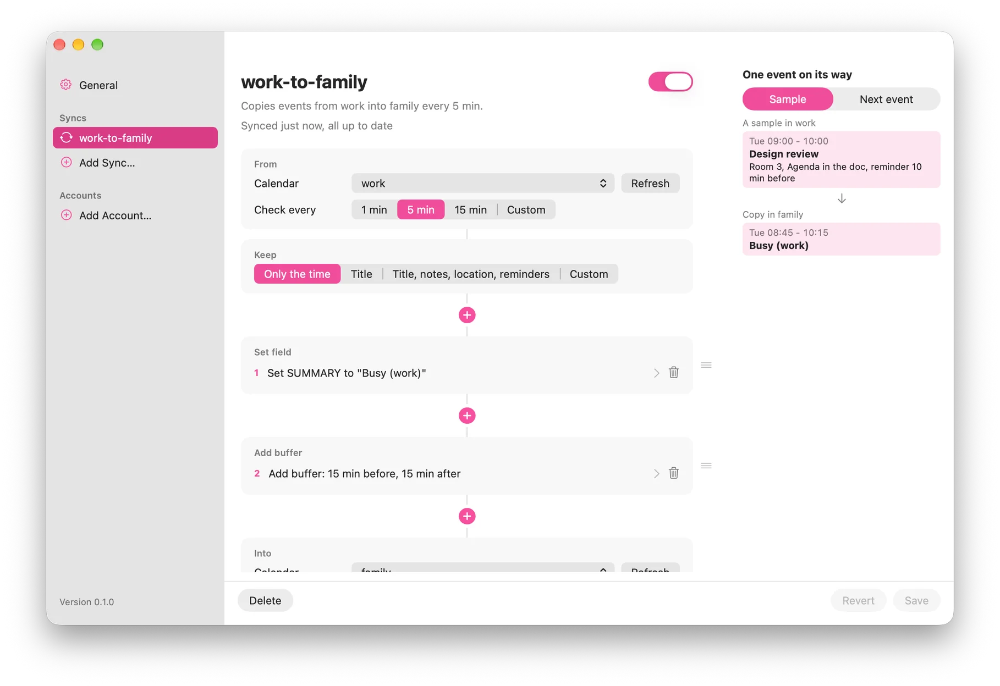
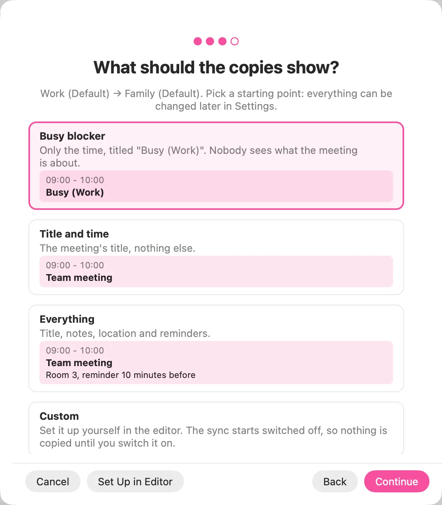

Calendar sync that knows how to keep a secret
Capycal copies events from one calendar into another and leaves out what the other side doesn't need to know. Your colleagues know when you're free. Your dentist appointment stays between you and your dentist.
Free and open source. macOS 14 or later on Apple silicon, any Linux.
One sync, three steps
A sync reads one calendar and writes copies into another, every few minutes. You decide what the copies show.
-
From
The calendar to copy: your work calendar on any CalDAV server, a calendar in Calendar.app or an iCal feed such as Google's secret address.
-
Keep
Times always come along. Title, notes, location and reminders only if you say so. Transforms rename events, add travel time before and after, or skip weekends and all-day events.
-
Into
The calendar that gets the copies. Capycal updates them when a meeting moves and removes them when it's cancelled. It never touches events it didn't create.

Runs where your calendars are
The same sync engine in three forms. Pick the one that fits, or move between them: they all read the same config file.
Mac menu bar app
Lives in the menu bar, shows each sync's status and sets up new syncs in a few clicks, with a live preview of what a copy will look like.
Linux desktop app
The same Settings and tray icon for GNOME, KDE and other desktops, built with GTK 4 and libadwaita.
Command line
A single binary for servers and home labs: systemd and launchd services, Docker, config reload on change, status at a glance.

Works with the calendars you have
- Any CalDAV serverNextcloud, Radicale or any other server that speaks CalDAV, in any combination with the others.
- Calendar.app on the MacEvery calendar you added to the Mac's Calendar app, including Exchange, Google and iCloud. No OAuth setup, no Exchange passwords in a config file.
- Calendar feedsRead-only .ics links as a source, like Google's secret address or a published Outlook.com calendar.
- Nothing in betweenCapycal runs on your computer and talks only to your calendars. No account, no cloud service, no tracking. Passwords stay in the Keychain or your keyring.
Install
Every download is on the releases page. The installation guide has the details.
Mac
The menu bar app with the command line tool inside. Apple silicon, macOS 14 or later.
Download .dmgOr with Homebrew:
brew install --cask twiebe/capycal/capycal-appThe app is not notarized yet. Before the first start, run:
xattr -dr com.apple.quarantine /Applications/Capycal.appLinux desktop
The tray app capycal-app as .deb and .rpm for x86_64 and arm64. Needs GTK 4.14 or later.
Or from the package repository, which keeps it up to date. On a desktop without a tray, it opens as a small window instead.
Command line
Homebrew on macOS and Linux:
brew install twiebe/capycal/capycalDebian and Ubuntu, from the package repository:
sudo curl -fsSLo /etc/apt/keyrings/capycal.asc https://capycal.app/packages/capycal.asc
echo "deb [signed-by=/etc/apt/keyrings/capycal.asc] https://capycal.app/packages/apt stable main" | sudo tee /etc/apt/sources.list.d/capycal.list
sudo apt update && sudo apt install capycal
Docker, with your capycal.toml in the current directory:
docker run -d --name capycal -e TZ=Europe/Berlin -v "$PWD":/etc/capycal:ro -v capycal-state:/var/lib/capycal ghcr.io/twiebe/capycal
Fedora and others: the installation guide has the package repository for dnf and static binaries. Then start with the quick start, or the Docker guide.
Free, open source, made in spare time
Capycal is free software under the GPL and has no paid version. If it saves you time, a sponsorship helps keep it going.